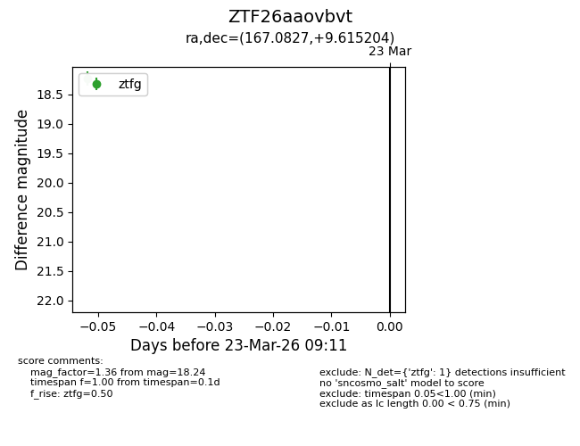
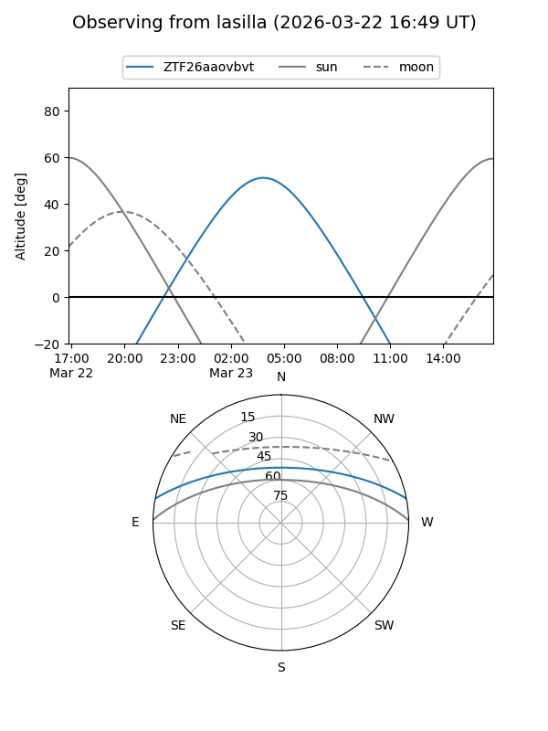
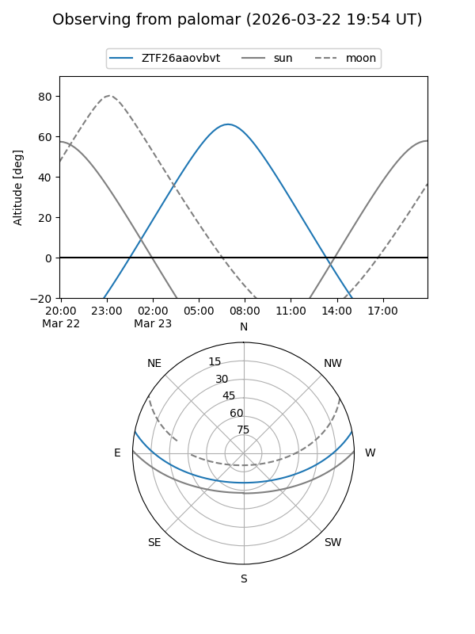

ZTF26aaovbvt
Target ZTF26aaovbvt at 2026-03-23 09:13
Aliases and brokers:
FINK: link
Lasair: link
ALeRCE: link
alt names
ZTF26aaovbvt (ztf,fink_ztf)
Coordinates:
equatorial (ra, dec) = 167.0827,+9.61520
equatorial (HMS+DMS) = 11:08:19.84,+09:36:54.74
galactic (l, b) = (243.7907,+60.03540)
Flags:
Photometry:
last ztfg=18.24
1 ztfg detections
Lightcurve

Visibility


Additional plots